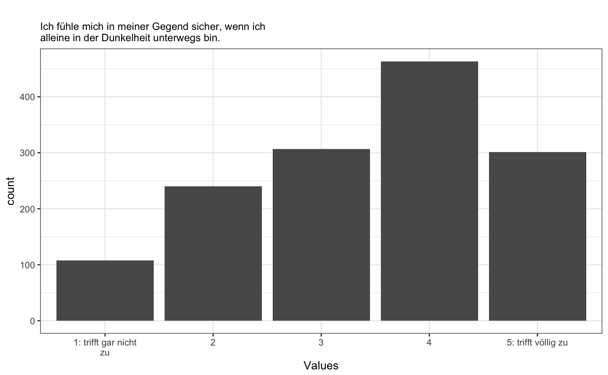

R/psych_print.R
Turn a psych::alpha() object into HTML tables.
knit_print.alpha(x, indent = "#####", ...)
| x | a psych alpha object |
|---|---|
| indent | add # to this to make the headings in the components lower-level. defaults to beginning at h5 |
| ... | ignored |
example("alpha", "psych")#> #> alpha> set.seed(42) #keep the same starting values #> #> alpha> #four congeneric measures #> alpha> r4 <- sim.congeneric() #> #> alpha> alpha(r4) #> [1] "#000000FF" "#FFFFFF00" "#FFFFFF00" "#FFFFFF00" "#FFFFFF00" "#000000FF" #> [7] "#FFFFFF00" "#FFFFFF00" "#FFFFFF00" "#FFFFFF00" "#000000FF" "#FFFFFF00" #> [13] "#FFFFFF00" "#FFFFFF00" "#FFFFFF00" "#FFFFFF00" #> #> alpha> #nine hierarchical measures -- should actually use omega #> alpha> r9 <- sim.hierarchical() #> #> alpha> alpha(r9) #> [1] "#000000FF" "#FFFFFF00" "#FFFFFF00" "#FFFFFF00" "#FFFFFF00" "#FFFFFF00" #> [7] "#FFFFFF00" "#FFFFFF00" "#FFFFFF00" "#FFFFFF00" "#000000FF" "#FFFFFF00" #> [13] "#FFFFFF00" "#FFFFFF00" "#FFFFFF00" "#FFFFFF00" "#FFFFFF00" "#FFFFFF00" #> [19] "#FFFFFF00" "#FFFFFF00" "#000000FF" "#FFFFFF00" "#FFFFFF00" "#FFFFFF00" #> [25] "#FFFFFF00" "#FFFFFF00" "#FFFFFF00" "#FFFFFF00" "#FFFFFF00" "#FFFFFF00" #> [31] "#000000FF" "#FFFFFF00" "#FFFFFF00" "#FFFFFF00" "#FFFFFF00" "#FFFFFF00" #> [37] "#FFFFFF00" "#FFFFFF00" "#FFFFFF00" "#FFFFFF00" "#000000FF" "#FFFFFF00" #> [43] "#FFFFFF00" "#FFFFFF00" "#FFFFFF00" "#FFFFFF00" "#FFFFFF00" "#FFFFFF00" #> [49] "#FFFFFF00" "#FFFFFF00" "#000000FF" "#FFFFFF00" "#FFFFFF00" "#FFFFFF00" #> [55] "#FFFFFF00" "#FFFFFF00" "#FFFFFF00" "#FFFFFF00" "#FFFFFF00" "#FFFFFF00" #> [61] "#000000FF" "#FFFFFF00" "#FFFFFF00" "#FFFFFF00" "#FFFFFF00" "#FFFFFF00" #> [67] "#FFFFFF00" "#FFFFFF00" "#FFFFFF00" "#FFFFFF00" "#000000FF" "#FFFFFF00" #> [73] "#FFFFFF00" "#FFFFFF00" "#FFFFFF00" "#FFFFFF00" "#FFFFFF00" "#FFFFFF00" #> [79] "#FFFFFF00" "#FFFFFF00" "#000000FF" #> #> alpha> # examples of two independent factors that produce reasonable alphas #> alpha> #this is a case where alpha is a poor indicator of unidimensionality #> alpha> two.f <- sim.item(8) #> #> alpha> #specify which items to reverse key by name #> alpha> alpha(two.f,keys=c("V1","V2","V7","V8"))#> Error in alpha(two.f, keys = c("V1", "V2", "V7", "V8")): unused argument (keys = c("V1", "V2", "V7", "V8"))#> #> #> #> #> ##### Reliability #> #> ##### 95% Confidence Interval #> #> --------------------------- #> lower estimate upper #> ------- ---------- -------- #> 0.688 0.7272 0.7664 #> --------------------------- #> #> #> ---------------------------------------------------------------------------------- #> raw_alpha std.alpha G6(smc) average_r S/N ase mean sd #> ----------- ----------- --------- ----------- ------- --------- --------- -------- #> 0.7272 0.7285 0.6795 0.4015 2.684 0.01999 -0.0125 0.7556 #> ---------------------------------------------------------------------------------- #> #> ##### Reliability if an item is dropped: #> #> #> ------------------------------------------------------------------------- #> raw_alpha std.alpha G6(smc) average_r S/N alpha se #> -------- ----------- ----------- --------- ----------- ------- ---------- #> **V1** 0.6067 0.6079 0.5158 0.3407 1.55 0.03056 #> #> **V2** 0.6368 0.6386 0.5532 0.3707 1.767 0.0283 #> #> **V3** 0.6785 0.6802 0.6022 0.4148 2.127 0.02514 #> #> **V4** 0.7348 0.7346 0.6532 0.4799 2.768 0.02055 #> ------------------------------------------------------------------------- #> #> ##### Item statistics #> #> #> -------------------------------------------------------------------- #> n raw.r std.r r.cor r.drop mean sd #> -------- ----- -------- -------- -------- -------- -------- -------- #> **V1** 500 0.8014 0.8039 0.7276 0.6169 0.05 1.005 #> #> **V2** 500 0.7746 0.7735 0.6717 0.5658 -0.022 1.029 #> #> **V3** 500 0.722 0.729 0.5844 0.4957 -0.028 0.9885 #> #> **V4** 500 0.6714 0.6632 0.4641 0.4001 -0.05 1.052 #> -------------------------------------------------------------------- #> #> ##### Non missing response frequency for each item #> #> #> ------------------------------------------------------- #> -2 -1 0 1 2 miss #> -------- ------- ------- ------- ------- ------- ------ #> **V1** 0.056 0.238 0.38 0.252 0.074 0 #> #> **V2** 0.07 0.264 0.35 0.25 0.066 0 #> #> **V3** 0.054 0.274 0.384 0.222 0.066 0 #> #> **V4** 0.096 0.22 0.392 0.222 0.07 0 #> -------------------------------------------------------